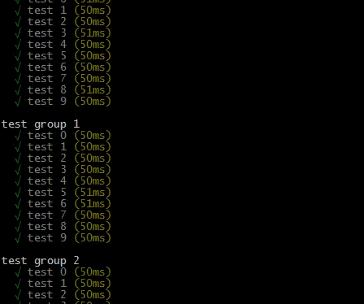
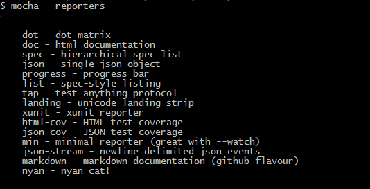
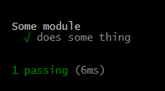
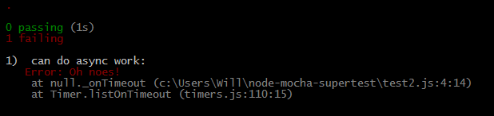

Will Anderson
will@itsananderson.com
http://willi.am/
https://github.com/itsananderson
https://twitter.com/itsananderson
Where to find these slides:
Test reporters:
mocha --reporter dot
Test reporters:
mocha --reporter spec

Test reporters:
mocha --reporter nyan
Lots more options:

A Simple Example:
var someModule = require("../");
var assert = require("assert");
describe("Some module", function() {
it("does some thing", function() {
assert(someModule.doesSomeThing());
});
});
Basic Mocha API:
describe
High level grouping (suite) of tests. You can nest describe inside another describes
it
A single test function. Usually tests one feature or edge case
Advanced Mocha hooks:
before
Run once before all tests in a test suiteafter
Run once after all tests in a test suite
Advanced Mocha hooks:
beforeEach
Run before every test in a test suiteafterEach
Run after every test in a test suite
A note on async code:
it('can do async work', function(done) {
setTimeout(function() {
done();
}, 1000);
});A note on async code:
it('can do async work', function(done) {
setTimeout(done, 1000);
});The done callback can handle errors
it('can do async work', function(done) {
setTimeout(function() {
done(new Error("Oh noes!");
}, 1000);
});
Simple API server:
var express = require("express");
var app = express();
app.get("/", function(req, res) {
res.send({ message: "Hello, World!" });
});
app.get("/foo", function(req, res) {
res.send({ message: "foo foo" });
});
app.listen(process.env.PORT || 3000);Simple test:
var assert = require("assert");
var request = require("request");
require("./server");
describe("Server", function() {
it("responds with JSON message 'Hello, World!' at the root", function(done) {
request("http://localhost:3000", function(err, response, body) {
if (err) done(err);
var payload = JSON.parse(body);
assert.equal(payload.message, "Hello, World!");
done();
});
});
});Small problem: port conflicts
request("http://localhost:3000", function(err, response, body) {New server:
var express = require("express");
var app = express();
app.get("/", function(req, res) {
res.send({ message: "Hello, World!" });
});
app.get("/foo", function(req, res) {
res.send({ message: "foo foo" });
});
module.exports = app;New tests:
var assert = require("assert");
var request = require("request");
var app = require("./server");
var server = app.listen(0);
var port = server.address().port;
describe("Server", function() {
it("responds with JSON message 'Hello, World!' at the root", function(done) {
request("http://localhost:" + port + "/", function(err, response, body) {
if (err) done(err);
var payload = JSON.parse(body);
assert.equal(payload.message, "Hello, World!");
done();
});
});
});Isolating server for each test:
var request = require("request");
var app = require("./server");
describe("API Server", function() {
var server;
var port;
beforeEach(function(done) {
server = app.listen(0, done);
port = server.address.port();
});
afterEach(function() {
server.stop();
});
// ...Before supertest
var app = reqiure("../");
var request = require("request");
var assert = require("assert");
// server setup
it("Responds with 'Hello, World!'", function(done) {
request("http://localhost:" + port + "/", function(response, body) {
assert.equal(response.statusCode, 200);
assert.equal(body, "Hello, World!");
done();
});
});After supertest:
var app = require("../");
var supertest = require("supertest")(app);
it("Responds with 'Hello, World!'", function(done) {
supertest
.get("/")
.expect(200)
.expect("Hello, World!")
.end(done);
});Testing JSON responses:
supertest
.get("/json")
.expect(200)
.expect({
message: "Hello, World!"
})
.end(done);Testing responses with a RegEx:
supertest
.get("/")
.expect(200)
.expect(/Hello.*/)
.end(done);Testing responses with a custom validator function:
supertest
.get("/nav")
.expect(200)
.expect(function(res) {
assert(res.body.prev, "Expected prev link");
assert(res.body.next, "Expected next link");
})
.end(done);Lots more validation examples:
Testing external APIs
var supertest = require("supertest")("http://www.google.com/");
// http://google.com/foo
supertest.get("/foo")
.end();
// http://google.com/search?q=test
supertest.get("/search?q=test")
.end();Other supertest examples
// Uploading a file
supertest
.post("/upload")
.attach("fieldName", "path/to/file.jpg")
.end();Other supertest examples
// Set a header and send a JSON body
supertest
.post("/foo")
.set("Content-Type", "application/json")
.send({
message: "Hello, Server!"
})
.end();Other challenges:
Before IoC:
function UserManager() {
this.db = new DBConnection("username", "password");
}
UserManager.prototype.createUser = function(username, password) {
var user = this.db.users.create(username, hash(password));
};
// ...After IoC:
function UserManager(dbConnection) {
this.db = dbConnection;
}
UserManager.prototype.createUser = function(username, password) {
var user = this.db.users.create(username, hash(password));
};
// ...Testing a component with IoC:
var UserManager = require("./user-manager");
describe("UserManager", function() {
it("hashes passwords", function() {
var fakeDbConnection = {
users: {
create: function(username, password) {
assert.equal(password, hash("1234"));
}
}
};
var manager = new UserManager(fakeDbConnection);
manager.createUser("foo", "1234");
});
});Composing Express middleware:
var users = require("./routes/users");
var friends = require("./routes/friends");
var messages = require("./routes/messages");
var auth = require("./routes/auth");
var app = require("express")();
app.use(auth.router());
app.use(users);
app.use(auth.authenticate(), friends);
app.use(auth.authenticate(), messages);
app.listen(process.env.PORT || 3000);Testing Express middleware:
var app = require("express")();
var messages = require("../routes/messages");
// Stub out a fake user
app.use(function(req, res, next) {
req.user = {
id: 1
};
next();
});
app.use(messages); // No authentication
var supertest = require("supertest")(app);
// ... mocha tests// Create a single function
var returnTrue = sinon.stub().returns(true);
var returnFalse = sinon.stub().returns(false);
var throwsError = sinon.stub().throws(new Error("some error"));// Return different values for different inputs
var factorial = sinon.stub();
factorial.withArgs(1).returns(1);
factorial.withArgs(2).returns(2);
factorial.withArgs(3).returns(6);// Modify an object
var stubbed = sinon.stub(dbConnection.users, "findByUsername").returns({
username: "foo",
passwrod: hash("1234")
});
stubbed.restore(); // Restore original methodSpy on an anonymous function
var callback = sinon.spy();
PubSub.subscribe("message", callback);
PubSub.publishSync("message");
assert(callback.called);Spy on an existing function
var spyHash = sinon.spy(hash);
var manager = new UserManager(db, spyHash);
manager.validateLogin("foo", "1234"); // Should call hashing function
assert(spyHash.called);var dbConnection = new DBConnection("username", "password");
var mockUsers = sinon.mock(dbConnection.users);
mockUsers.expects("create").once().withArgs("foo", hash("1234"));
var manager = new UserManager(dbConnection);
manager.createUser("foo", "1234");
mockUsers.verify();
mockUsers.restore();Running a single Mocha test:
describe("Foo", function() {
it("test1", function() {});
it("test2", function() {});
it("test2", function() {});
});Running a single Mocha test:
describe("Foo", function() {
it("test1", function() {});
it.only("test2", function() {});
it("test2", function() {});
});Running a single Mocha test group:
describe.only("Foo", function() {
it("test1", function() {});
it("test2", function() {});
it("test2", function() {});
});Custom timeout:
```javascript describe("Foo", function() { it("long test", function(done) { this.timeout(10000); // do slow async things done(); }); });
Watch for changes and re-run tests:
mocha --watch